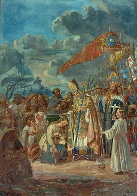

„Hoće li tko za mnom, neka se odreče samoga sebe, neka uzme svoj križ i neka ide za mnom.” (Mt 16,24)

Henrik, rodom iz Engleske, bio je misionar poslan iz Rima kako bi širio kršćanstvo u skandinavskim zemljama. Godine 1152. postao je biskup Uppsale u Švedskoj, a u povijest je ušao kao bliski prijatelj švedskog kralja Erika IX. Svetog. Zajedno s kraljem sudjelovao je u pohodu na Finsku 1154. godine, nakon čega je ostao na tom području kako bi se potpuno posvetio evangelizaciji finskog naroda, zbog čega se danas naziva "Apostolom Finske".
Njegovo djelovanje u Finskoj obilježeno je neumornim propovijedanjem, krštenjem naroda i izgradnjom prve crkve u Nousiainenu. Međutim, Henrikova misija tragično je prekinuta 20. siječnja 1156. godine na zaleđenom jezeru Köyliö. Prema predaji, usmrtio ga je sjekirom finski vojnik Lalli, kojeg je biskup prethodno izopćio iz Crkve zbog ubojstva. Ta je pogibija Henriku donijela status mučenika, dok su narodne legende ubojicu Lallija pratile pričama o nesretnoj sudbini i grižnji savjesti.
Nakon smrti, na Henrikovu su se grobu počela događati brojna čudesa, što je dovelo do njegova brzog štovanja kao sveca. Njegove su relikvije 1300. godine svečano prenesene u katedralu u Turkuu, a u papinskim se dokumentima kao svetac spominje još od kraja 13. stoljeća. Danas ga podjednako štuju katolici i protestanti kao glavnog zaštitnika Finske te brojnih župa diljem Skandinavije.